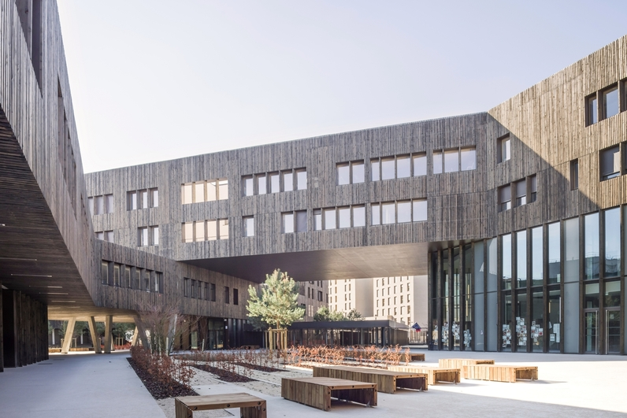

Dans ce site je vais vous montré mon parcours du lycée jusqu'à l'université
Voci une photo de mon lycée qui se nomme Angela Davis :

si vous souhaitez avoir plus d'information de l'établissement Etudiant
Le lien vous permetra de connaitre par exemple:
La SECONDE: c'etait plutot la routine,pas grand chose à faire du genre les éxamens pour se préparer au bac tout était plutot simple mais malheuresemnt la covid 19  nous empêcher de terminer notre année malgré que certains prof ait voulut continuer les cours en télétravail,cepandant il y avait des diffilutés pour suivre avec les bugs insupportables ,peut de personnes y participaient ce qui rendait les cours sans valeurs et les déconnexion incessantes.
nous empêcher de terminer notre année malgré que certains prof ait voulut continuer les cours en télétravail,cepandant il y avait des diffilutés pour suivre avec les bugs insupportables ,peut de personnes y participaient ce qui rendait les cours sans valeurs et les déconnexion incessantes.
LA PREMIERE : j'ai choisi pour les 3 matiéres a pratiquer sont l'HGGSP,SVT, NSI et Ce qui est drole avec NSI ce fut la premiére fois que cette matiére sera mise à l'épruve du bac. Pour ceux oû celle a qui c'intèrresse de découvrir oû on a pratiqué Python Replit vous pourrez créer des projets en ligne et écrire des codes dans plusieur langues.
LA TERMINALE : Pas grande chose a vous raconter qu'a part être que j'ai retirer SVT et que je me suis concentré pendant les cours et réviser beaucoup beaucoup mes lecons des 2 matiéres que j'ai décider de garder.Mais surtout la philosophie qui pour moi est le plus ennuyeux car c'est celle qui ma le plus mis en difficulté nivaux compréhension durant l'année. 
Et bien c'est ma premiére année à l'université Paris 8 et j'étudie la licence informatique. Si vous voulez découvrir cette universite voici un lien qui vous donnera tout les informations en détail -> Université paris 8 et enfin voici un photo de l'établissement